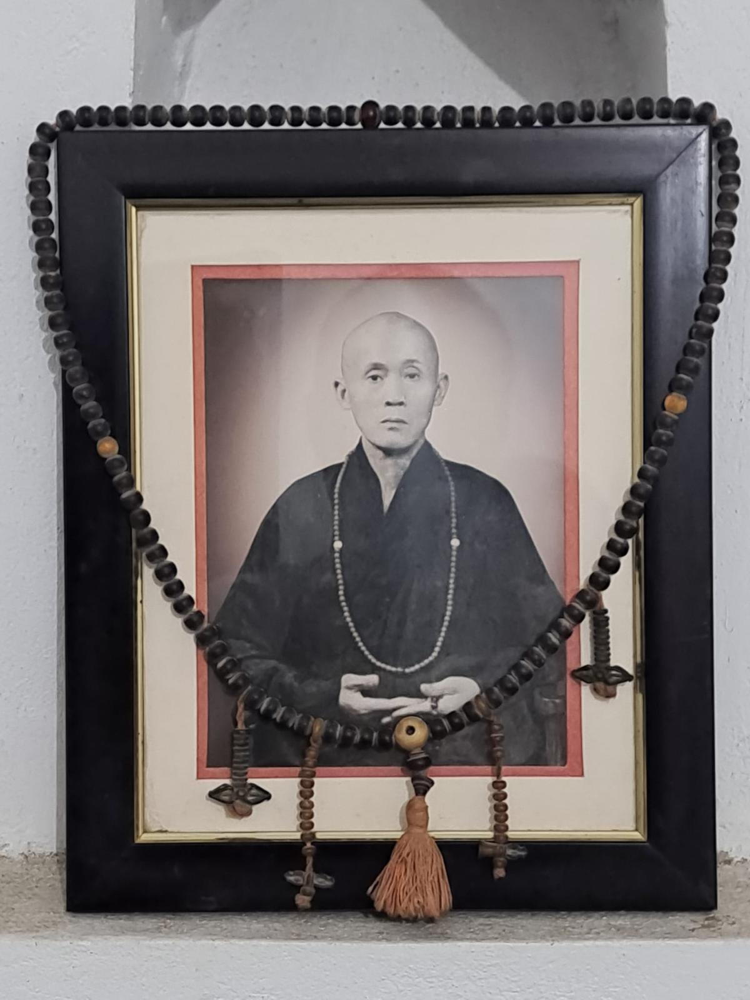
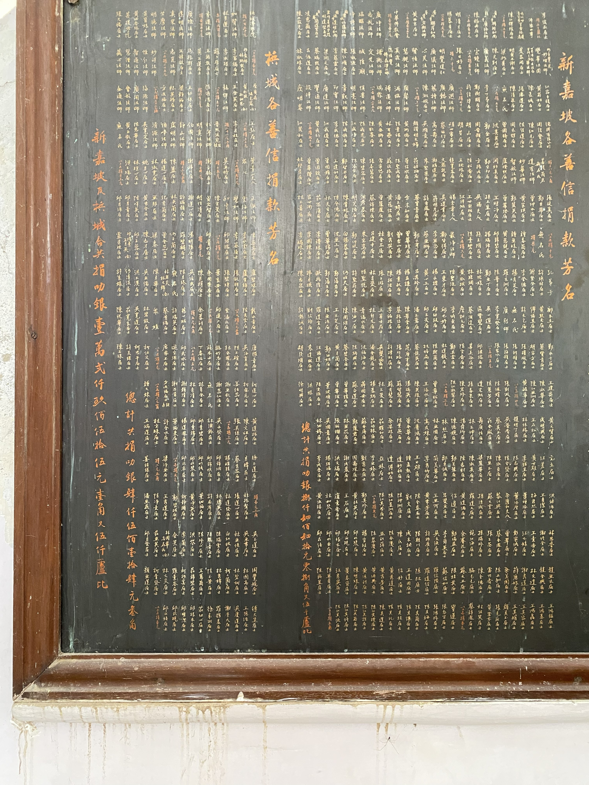

佛陀聖地：舍衛城的重要地位
華光寺所在的舍衛城祇樹給孤獨園，是佛陀住世時長期說法的重要聖地之一。對佛教徒而言，這裡不只是歷史遺址，更是承載信仰記憶與朝聖願心的地方。因此，前往舍衛城朝禮，向來具有深厚的宗教意義。

華光寺歷史專題 ==> !!! 開發測試中 !!!
從佛陀聖地的因緣，到仁證法師的發願，再到華光寺的建立與重建。
導言
華光寺的歷史，不只是某一座寺院的興建經過，更是一段近代中印佛教交流的重要見證。這段歷史，包含佛陀聖地舍衛城的特殊地位，也包含仁證法師遠赴印度、發願建寺的願心，以及寺院歷經初建、焚毀與重建的艱辛過程。
一、歷史背景
華光寺所在的舍衛城祇樹給孤獨園，是佛陀住世時長期說法的重要聖地之一。對佛教徒而言，這裡不只是歷史遺址，更是承載信仰記憶與朝聖願心的地方。因此，前往舍衛城朝禮，向來具有深厚的宗教意義。
到了近代，雖然中國內部歷經動盪與戰亂，但中國佛教界對印度佛教聖地的關心並未中斷。對許多佛教徒而言，前往印度朝禮佛陀遺跡，不只是遠行，更是一種回到佛法源流的追尋。
當時前往印度聖地的華人僧俗，在當地往往缺乏合適的禮佛、安住與修行空間。也體此，在舍衛城建立一座能夠依漢傳佛教傳統禮佛、掛單與住宿的寺院，成為十分實際而迫切的需要。
華光寺的建立，並不只是單一個人的願行，也凝聚了中國佛教界與海外華僑、護法居士的支持。尤其新加坡、馬來亞、菲律賓等地善信的護持，使建寺與後來的重建得以逐步完成。


二、創寺法師
仁證法師，湖北籍，早年於黃陂古潭禪寺出家，於 1931 年披剃受戒。受戒之後，法師苦行清修，行腳參學，遍歷名山叢林，鍛鍊志願，也增長見聞。
1937 年，仁證法師發願西行，遠赴印度佛教聖地朝禮。當時交通艱難、環境陌生，能夠從中國一路行至印度，本身便需要極大的信心與毅力。法師歷經艱辛，最終抵達舍衛城祇樹給孤獨園。
抵達舍衛城後，仁證法師先在聖地安住修行。隨著日久，他深切感受到前來朝聖的華人僧俗，在當地缺乏一處能夠依漢傳佛教傳統禮佛、掛單、安住與修行的地方。於是，原本結廬修行的念頭，逐漸轉化為在舍衛城建立一座華人寺院的願心。
仁證法師後來購地興工，創建華光寺，使其成為華人佛教徒朝禮佛陀聖地的重要依止處。1976 年 10 月 13 日，法師於華光寺圓寂。法師一生從中國出家、發願西行，到終老佛陀聖地，其生命歷程與華光寺的命運緊緊相連。
三、籌建過程
華光寺的建立，經過發願、購地、挫折與再度護持。這段歷程，使寺院的存在更顯珍貴。

仁證法師初到舍衛城時，原本只是希望結一茅蓬，作為自修與供僧人掛單停留之所。隨著對聖地環境與華人朝聖需求的體會加深，這個念頭逐漸發展成正式建寺的願心。
在異國聖地建寺並不容易。當時面對人地生疏、語言隔閡與資源有限的困難，但法師仍憑藉堅定願心，在諸方僧俗協助下購地興工，逐步完成最初的寺院建設。
寺院建成後，曾遭火災焚毀。面對重大挫折，仁證法師並未退失，而是在禪誦修行之餘，再次發願重建。這段經歷，也使華光寺的歷史更顯珍貴。
在重建過程中，地方官員、四眾弟子與護法居士共同施財協助。仁證法師也曾赴新加坡等地募化，獲得新加坡、馬來亞、菲律賓等地華僑善信護持，終於使重建工程得以完成。
重建後的華光寺，不只是單一建物，而是包括大雄寶殿、附屬殿堂及相關設施的寺院群。寺院可供華人佛教徒依漢傳佛教傳統禮佛、修行與住宿，因此也被稱為舍衛城中華寺。



四、歷史意義
華光寺建立於佛陀重要聖地舍衛城，為華人佛教徒提供了一處朝禮、修行與安住的道場。
華光寺的創建與延續，見證了近代中國佛教界對印度聖地的嚮往，以及跨越地域的中印佛教因緣。
華光寺並非一人之力所成，而是凝聚了法師願心、僧俗護法與海外華僑共同成就的歷史道場。
結語
華光寺的歷史，既是一位法師遠赴佛陀聖地、發願建寺的生命故事，也是近代中印佛教交流與華人護持力量交會的歷史見證。從發願、建寺、焚毀到重建，這段歷程所展現的，不只是建築的完成，更是一種願心的延續。
若您有各項弘法建議，歡迎留言與我們聯絡。